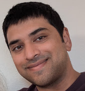

Dhruv Patel

Summary
- Detail-oriented and results-driven Manufacturing Engineer with 5+ years of experience in optimizing production processes, improving efficiency, and reducing costs in manufacturing environments.
- Skilled in process design, Lean manufacturing, Six Sigma methodologies, CAD software, and production line management.
- Adept at working cross-functionally with teams to deliver high-quality products while ensuring safety, compliance, and budget control. Committed to driving continuous improvement and operational excellence.
Education
Bachelor of Science in Bioengineering (2013-2017)
University of California, Riverside • Riverside, CA
Work Experience
-
NPI Manufacturing Engineer - ASML
8/2021 - Present
-
Led the design, development, and implementation of new manufacturing processes, improving tool availability by 15% while reducing costs by 27%.
-
Collaborated with production teams to identify bottlenecks and implement process improvements, resulting in a 17% increase in throughput.
-
Conducted root cause analysis and implemented corrective actions for quality control issues, reducing defects by ~10%.
-
Utilized Lean and Six Sigma methodologies to streamline operations and eliminate waste, achieving significant cost savings.
-
Designed and tested new manufacturing tools and equipment, optimizing production lines and improving safety protocols.
-
Supported new product launches, collaborating with product development and production teams to ensure manufacturability and cost-effectiveness.
-
Monitored and analyzed production metrics, making recommendations to senior management for continuous improvement.
-
Program Quality Engineer - Northrop Grumman
10/2019 - 8/2021
-
Ensured continuous process improvement in production area by conducting investigation of QNs to staff in corrective action board meetings.
-
Executed projects to validate First Article Inspection (FAI) reports from vendors for stage six weld vanes within budgetary and time constraints.
-
Analyzed first article weld vane samples for approval by utilizing GD&T principles and CMM reporting strategies.
-
Evaluated QN history for new part in machining manufacturing area to present results in First Time Process Review (FTPR) meeting with relevant stakeholders.
-
Executed corrective actions to operators that caused errors, redesign, and simplified instructions and sketches to decrease average monthly rework hours from approximately 250 to 200 hours for machining manufacturing shop.
-
Monitored critical quality notifications and minimized time by 50 days via creation and deployment of complex SAP.
Skills
- RCCA, SAP, GD&T (ASME Y14.5-2009), FAI, FTPR, Minitab, NDT, CMM, Siemens NX, 3D CAD (Solidworks, AutoCAD, Catia, NX, Fusion 360), Arduino, Additive Manufacturing, Rapid Prototyping, Iterative Design, Soldering, PCB design (TinyCAD)
Awards and Certifications
-
Recognized as top performer in year-end review - Northrop Grumman (3/2021)
- Geometric Dimensioning and Tolerancing Certification - Northrop Grumman (2/2020)
Other